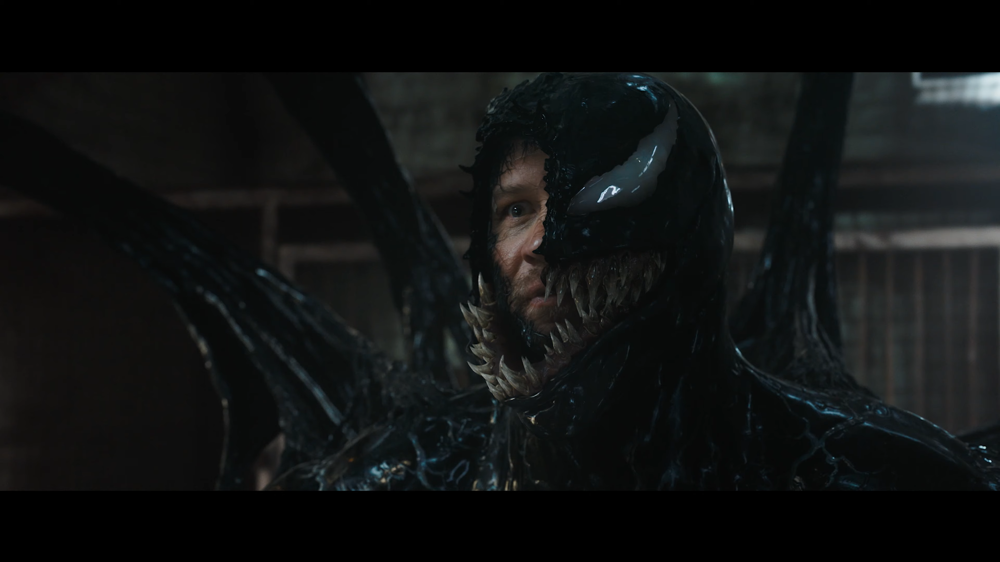
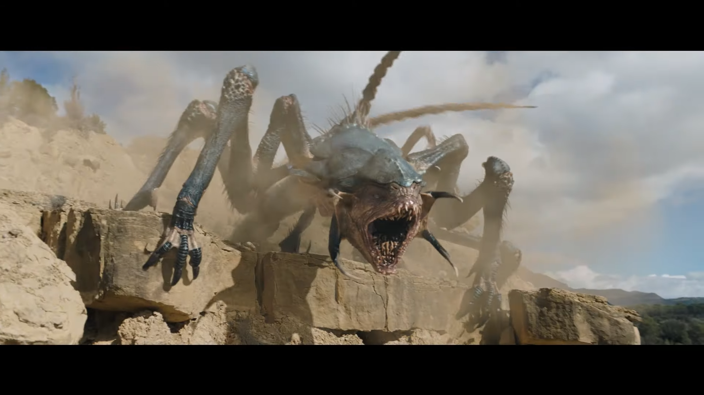
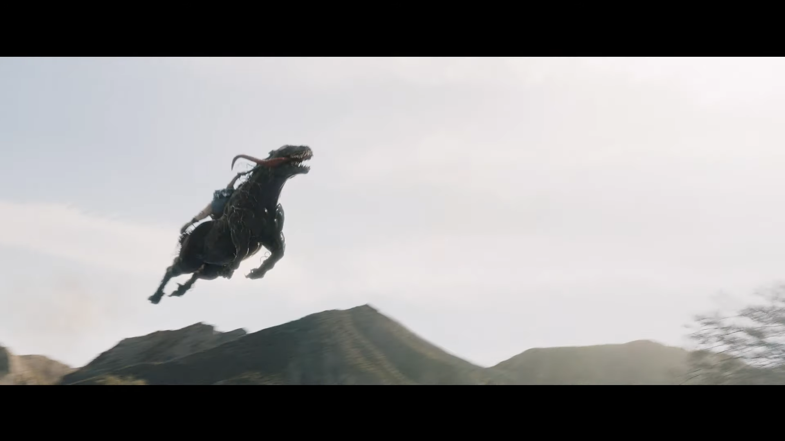
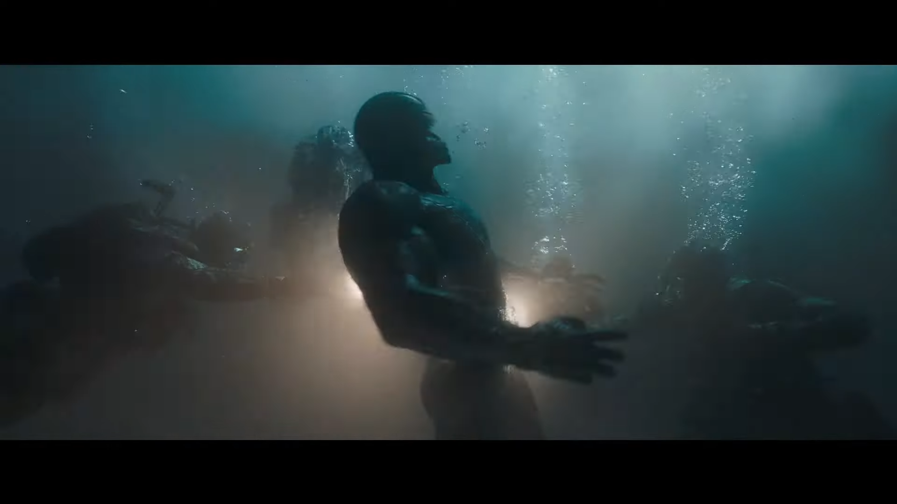

Трейлер
Кадри




Більше інформації
У кіно з: 24 жовтня 2024 до 4 грудня 2024
Тривалість: 109 хв.
Вікові обмеження: 16+
Рік: 2024
Країна: США
Жанр: фантастика, екшн, Marvel
Опис фільму: Журналіст-розслідувач Едді Брок (Том Гарді) сам того не бажаючи став єдиним на Землі носієм інопланетної форми життя. У ньому живе Веном – симбіот, який потребує для себе живого носія-людину. Симбіоти давно вже шукають планету, на якій змогли б заволодіти тілами її мешканців та зрештою поглинути їх. Едді та Веном знаходять спільну мову та йдуть на компроміси, аби співіснувати. Настає час, коли Едді для людей, а Веном для своєї раси стають чужинцями. Разом вони тікатимуть від усіх, хто хоче їх знайти.
Фантастичний бойовик та трилер «Веном: Останній танець» є третім фільмом про персонажа з коміксів. Події фільмів розгортаються у кіновсесвіті Людини Павука від Sony. Про появу третього фільму було відомо одразу після виходу першої частини. Безпосередньо до розробки приступили у 2021 році. Зйомки розпочалися влітку 2023 року у Іспанії. До виконання головної ролі повернувся британський актор Том Гарді, також він став співавтором сценарію. Його гонорар за участь у цьому фільмі складає $ 20 млн.
У головних ролях: Том Гарді, Чиветел Еджіофор, Джуно Темпл
Режисер: Келлі Марсел
Сценарій: Келлі Марсел, Том Гарді